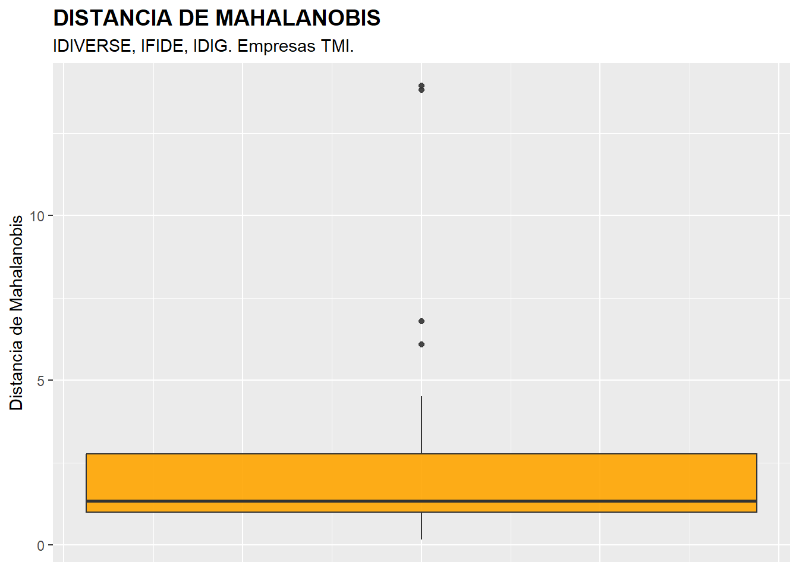
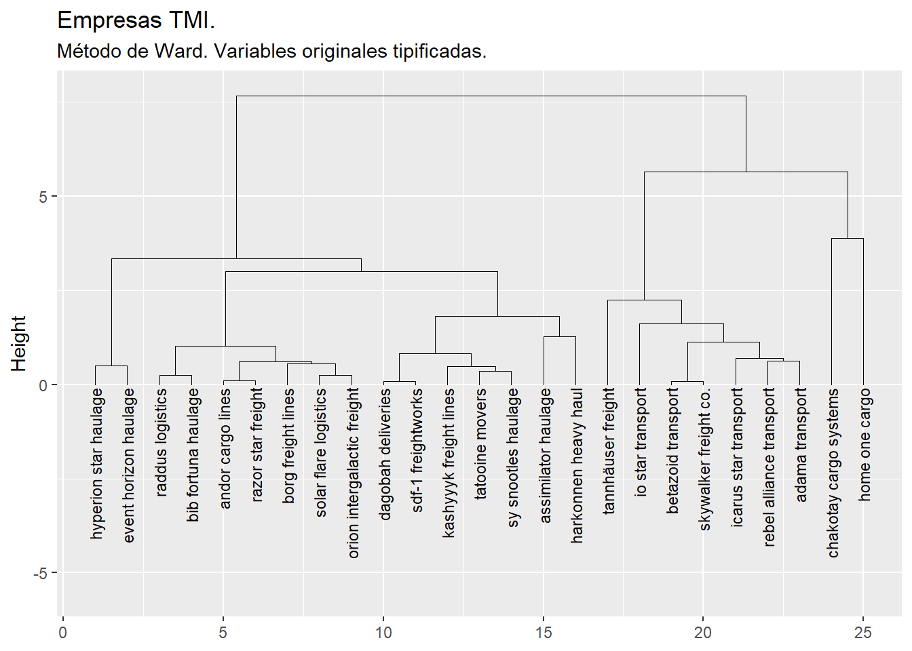
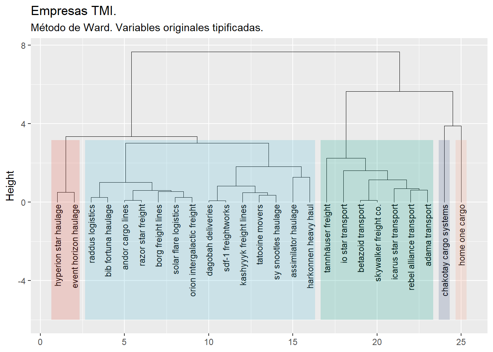
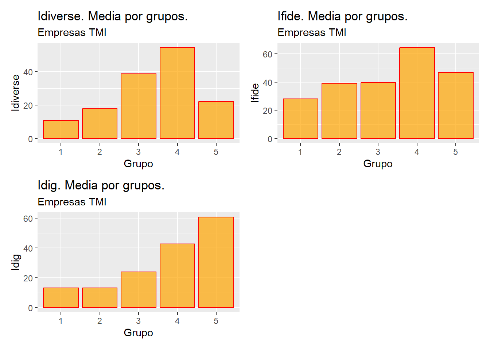
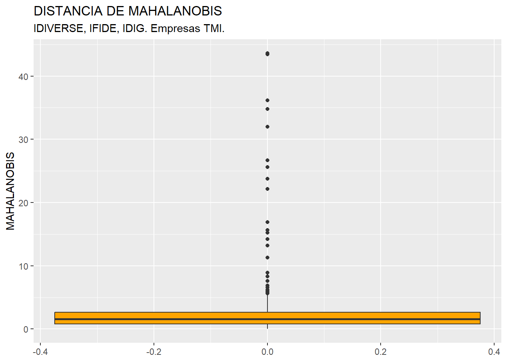
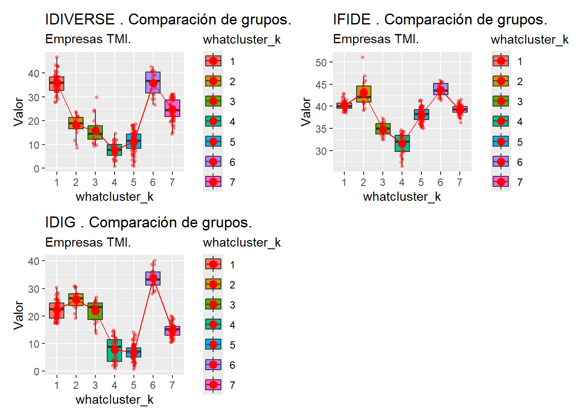
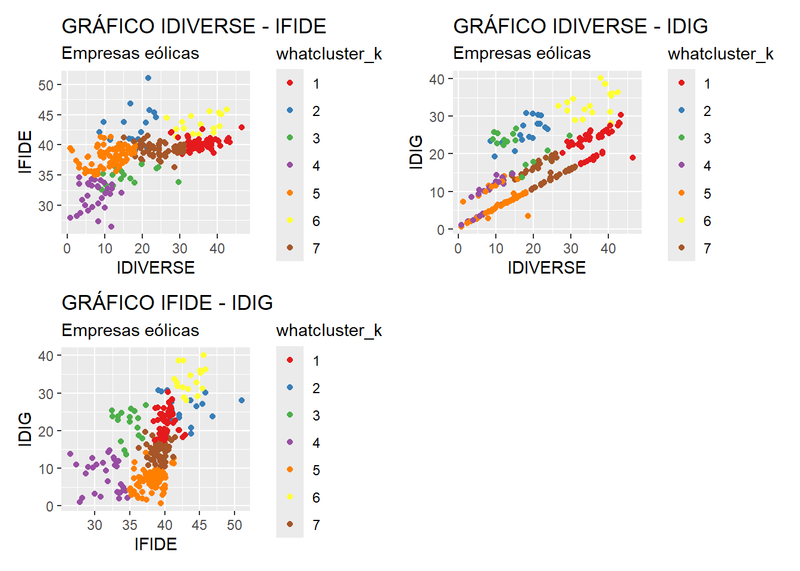
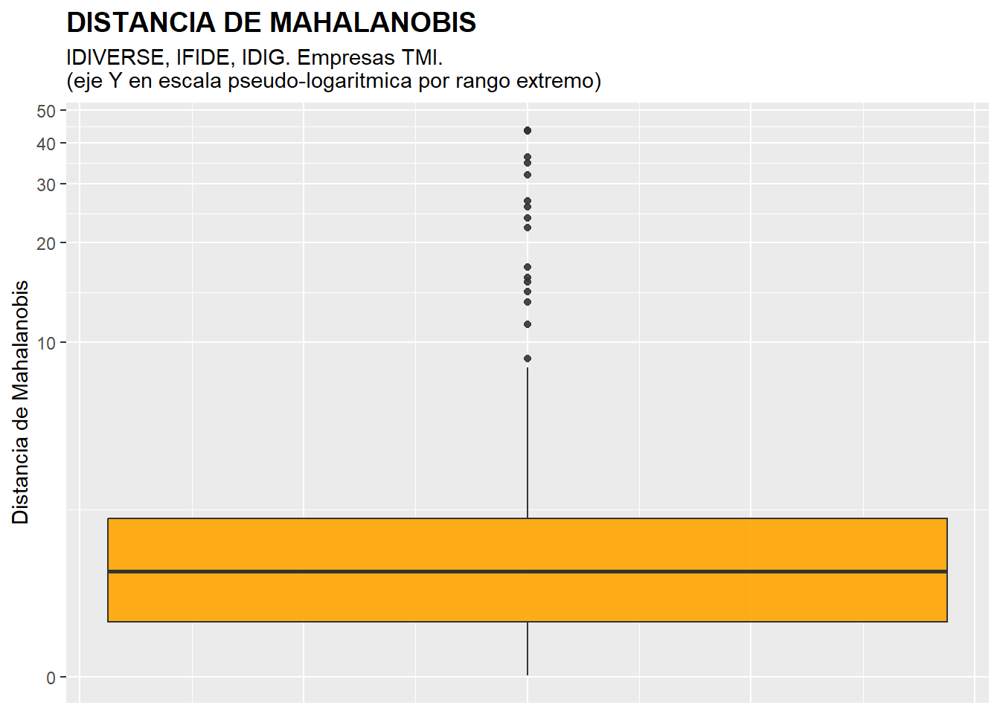
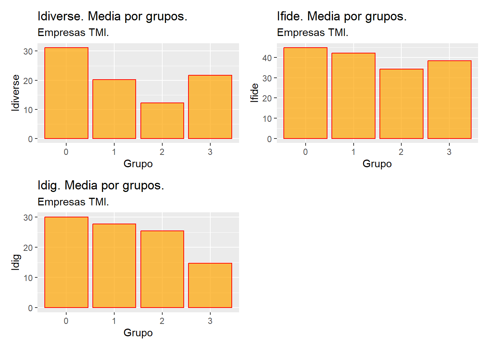

7 Análisis Clúster.

Figura 7.1. Grupos de cargueros en travesía.
7.1  Introducción.
Introducción.
El análisis de conglomerados —o análisis de clústeres (AC)— agrupa casos con características similares en función de un conjunto de variables clasificadoras. El objetivo es que:
- Los casos de un mismo clúster sean lo más homogéneos posible entre sí.
- Los clústeres entre sí sean lo más heterogéneos posible, de acuerdo con las variables consideradas.
En general, el proceso de determinación de los grupos, conglomerados o clústeres de casos es el siguiente:
- Se parte de un conjunto de n casos, y para cada uno de ellos se cuenta con el valor de m variables clasificadoras.
- Se establece una medida de distancia que cuantifica lo que dos casos se parecen, considerando en conjunto los valores que poseen para las variables clasificadoras.
- Se crean los grupos, conglomerados o clústeres con los casos que poseen entre sí una menor distancia.
- Finalmente, se caracterizan los grupos, conglomerados o clústeres obtenidos, y se comparan unos con otros para extraer conclusiones.
En lo que respecta a la medida de distancia entre los casos, la medida más habitual es la distancia euclídea. Así, la distancia euclídea entre dos casos, i e i’, para las m variables clasificadoras x, será:
\[ d(i, i') = \sqrt{\sum_{j=1}^{m} (x_{ij} - x_{i'j})^2} \]
Esta distancia es muy sensible a la escala de las variables clasificadoras. Para evitar este inconveniente, se trabaja con las variables previamente tipificadas.
7.1.1 Clasificación de los métodos de análisis clúster.
En la literatura actual (Kaufman and Rousseeuw 1990; Xu and Wunsch 2005; Jain 2010; Aggarwal 2015), los métodos de análisis clúster se clasifican en cinco grandes familias:
Métodos jerárquicos. Van formando sucesivamente grupos como agrupación de otros grupos precedentes (métodos aglomerativos: Ward, single linkage, complete linkage…) o dividen recursivamente un único grupo inicial (métodos divisivos como DIANA). Producen una estructura piramidal (dendrograma).
Métodos de partición o basados en centroides. Asignan los casos a un número prefijado de grupos, minimizando la varianza intra-clúster. El más representativo es k-medias; otros son k-medoids (PAM), CLARA.
Métodos basados en densidad. Detectan regiones densamente pobladas del espacio de variables y las declaran clústeres, dejando fuera los casos aislados como ruido. El más representativo es DBSCAN; otros son OPTICS y HDBSCAN.
Métodos basados en modelos. Suponen que los datos provienen de una mezcla de distribuciones (típicamente gaussianas) y estiman los parámetros mediante algoritmos EM. Ejemplo: modelos de mezclas gaussianas (GMM).
Métodos basados en cuadrículas o en grafos. Discretizan el espacio en celdas o construyen grafos de similitud (métodos espectrales, STING, CLIQUE).
En este capítulo abordaremos, con ejemplos prácticos en R, los tres primeros métodos, que son los más frecuentes en la práctica aplicada:
| Método | ¿Fija el nº de grupos? | Tamaño típico de muestra | Tratamiento de outliers | Forma de los clústeres | Ámbito preferente |
|---|---|---|---|---|---|
| Jerárquico (Ward) | No, se decide después | Pocos (decenas) | Los agrupa como el resto | Compactos (esféricos) | Clasificar todos los casos, incluidos atípicos |
| k-medias (partición) | Sí, a priori | Medio-alto (cientos, miles) | Sensible; requiere depurar antes | Compactos (esféricos) | Descubrir tipologías o segmentos poblacionales |
| DBSCAN (densidad) | No, emerge del algoritmo | Medio-alto (cientos, miles) | Los identifica como ruido | Formas arbitrarias | Detectar patrones densos y filtrar anomalías |
Tabla 7.1. Comparativa de los tres métodos de análisis clúster tratados en el capítulo.
Estos tres métodos serán ilustrados con un mismo hilo conductor: el Informe Bluebird, que abarca tres encargos consecutivos que la Agencia Interplanetaria de Transporte de Mercancías (AITM) realiza a la doctora Xelia Bluebird.
7.2  El Informe Bluebird.
El Informe Bluebird.
Figura 7.2. Agencia Interplanetaria del Transporte de Mercancías.
La Agencia Interplanetaria de Transporte de Mercancías (AITM) tiene entre sus cometidos el estudio del sector desde una perspectiva de segmentación. La doctora Xelia Bluebird (en la imagen), investigadora sénior de la agencia, es la responsable del informe anual de segmentación empresarial que lleva su nombre. Este año, el Informe Bluebird abarca tres encargos distintos, pero complementarios:
Figura 7.3. Xelia Bluebird, investigadora de la AITM.
Encargo 1 — Panel de candidatas premium (25 empresas). Tras la reciente compra de Home One Cargo por Arg-us Korp, la AITM ha seleccionado un panel de 25 empresas top para ofrecerles un programa de consultoría personalizada. Bluebird debe agrupar estas 25 candidatas en un número reducido de perfiles y ubicar en qué grupo queda encuadrada Home One Cargo junto a otras empresas de referencia. Al ser una muestra pequeña, donde nos interesa clasificar todos los casos —incluidos los eventuales outliers—, se aplicará un método jerárquico (algoritmo de Ward).
Encargo 2 — Tipologías del sector (300 empresas). El Consejo de la AITM ha solicitado un estudio de segmentación del sector completo, con 300 empresas, orientado a identificar tipologías o perfiles característicos de compañías, más que a clasificar casos individuales. Aquí interesa descubrir patrones poblacionales, para lo cual se aplicará un método de partición (k-medias con inicialización kmeans++).
Encargo 3 — Detección de anomalías y patrones de densidad (300 empresas). Como validación cruzada del encargo anterior, y para responder a otra petición de la agencia —¿existen agrupaciones “naturales” en función de la densidad de casos, y qué empresas quedan fuera de esas zonas densas?—, Bluebird aplicará un método basado en densidad (DBSCAN). Este método tiene la ventaja añadida de identificar los outliers como ruido, sin necesidad de eliminarlos previamente.
En las tres variables clasificadoras coinciden los tres encargos: los índices de fidelización de clientes (IFIDE), diversificación del negocio (IDIVERSE) y digitalización de la compañía (IDIG). Al final del capítulo, en la sección de síntesis, compararemos los resultados de las tres técnicas.
7.3  Encargo 1: análisis jerárquico (método de Ward).
Encargo 1: análisis jerárquico (método de Ward).
En los métodos jerárquicos aglomerativos, se van formando sucesivamente grupos como agrupación de otros grupos precedentes, hasta llegar a un único grupo que recoge a todos los individuos; tomando el proceso una estructura piramidal. Estos métodos son especialmente adecuados cuando hay un número reducido de casos y se quieren clasificar todos los casos —incluidos los outliers—, así como cuando se desconoce a priori el número de grupos a formar.
Entre los métodos jerárquicos aglomerativos más extendidos figuran:
- Vecino más cercano (single linkage): distancia entre grupos = distancia entre sus elementos más próximos.
- Vecino más lejano (complete linkage): distancia entre grupos = distancia entre sus elementos más lejanos.
- Método de Ward: se unen los grupos que dan lugar a otro grupo con menor varianza intra-clúster (menor suma de cuadrados respecto al centroide).
En la práctica, el método de Ward es uno de los más utilizados porque proporciona grupos muy homogéneos. Será el que apliquemos al panel de 25 candidatas premium.
7.3.1 Preparación de los datos.
Dado que son pocos los casos (empresas) a segmentar, vamos a utilizar un método jerárquico de agrupación de casos. En concreto, utilizaremos el método de Ward.
Vamos a suponer que trabajamos dentro de un proyecto que hemos creado previamente, de nombre “cluster”. Dentro de la carpeta del proyecto guardaremos estos dos elementos:
El script llamado “cluster_rstars.R”.
El archivo de Microsoft® Excel® llamado “interestelar_25.xlsx”. Si abrimos este último archivo, comprobaremos que se compone de tres hojas. La primera muestra un mensaje sobre el uso de los datos, la segunda recoge la descripción de las variables consideradas, y la tercera (hoja “Datos”) almacena los datos que debemos importar. Estos datos se corresponden con diferentes variables económicas y financieras de 25 empresas dedicadas a los servicios de transporte interestelar de mercancías.
Comenzaremos a ejecutar el código del script. En primer lugar, el código se ocupa de limpiar el Global Environment y cargar los paquetes necesarios. Uno de ellos es MATrstars, un paquete propio del libro que reúne funciones auxiliares utilizadas a lo largo de los distintos capítulos. Como no está disponible en CRAN, se instala directamente desde GitHub la primera vez; en las siguientes ocasiones bastará con activarlo con library(MATrstars). Los detalles del paquete y de las funciones que contiene se recogen en el Apéndice: Funciones auxiliares del paquete MATrstars.
### CLUSTER jerárquico 25 empresas TMI.###
# Limpiando el Global Environment
rm(list = ls())
# Cargando paquetes
library(readxl)
library(dplyr)
library(ggplot2)
library(gtExtras)
library(visdat)
library (factoextra)
library (knitr)
library (kableExtra)
library (patchwork)
# Paquete MATrstars: funciones auxiliares del libro R-Stars.
# Si no está instalado, se instala desde GitHub (solo la primera vez).
if (!requireNamespace("MATrstars", quietly = TRUE)) {
if (!requireNamespace("remotes", quietly = TRUE)) install.packages("remotes")
remotes::install_github("teckel71/MATrstars")
}
library(MATrstars)Posteriormente importaremos los datos del archivo de Excel®, y trataremos los casos con datos faltantes o missing values:
## DATOS
# Importando datos desde Excel
interestelar_25 <- read_excel("interestelar_25.xlsx",
sheet = "Datos",
na = c("n.d."))
interestelar_25 <- data.frame(interestelar_25, row.names = 1)
# Seleccionando variables metricas para el analisis.
seleccion <- interestelar_25 %>%
select(IDIVERSE, IFIDE, IDIG)
seleccion_df_graph <- gt_plt_summary(seleccion)
seleccion_df_graph| seleccion | ||||||
| 25 rows x 3 cols | ||||||
| Column | Plot Overview | Missing | Mean | Median | SD | |
|---|---|---|---|---|---|---|
| IDIVERSE | 0.0% | 24.8 | 22.2 | 13.0 | ||
| IFIDE | 0.0% | 39.8 | 39.6 | 6.6 | ||
| IDIG | 0.0% | 19.4 | 15.1 | 13.1 | ||
Tabla 7.2
Para el diagnóstico y, en su caso, filtrado de los missing values aplicamos la función auxiliar explora_na() del paquete MATrstars que ya se presentó en el capítulo 5:
# Diagnóstico y filtrado de missing values.
seleccion <- explora_na(
seleccion,
accion = "eliminar",
titulo = "Indicadores: Diversificación, Fidelidad, Digitalización",
subtitulo = "Transporte de mercancías interestelar"
)No se ha localizado ninguna observación con missing values, luego no se ha de realizar ningún tipo de tratamiento.
El siguiente paso es la identificación de outliers. Como en el análisis contamos con 3 variables métricas, “resumiremos” el valor que toma cada caso en el conjunto de las variables mediante el cálculo de la distancia de Mahalanobis, sobre la que aplicaremos la regla clásica de 1.5 veces el rango intercuartílico para identificar los casos atípicos.
Todo este proceso —cálculo de Mahalanobis, boxplot de la distancia, identificación de los casos atípicos y presentación en una tabla— se realiza en una sola llamada mediante la función auxiliar explora_outliers() del paquete MATrstars que ya se presentó en el capítulo 5. Cuando se le pasa un data frame con varias variables métricas, la función detecta el caso multivariante y calcula internamente la distancia de Mahalanobis. Como en “seleccion” solo hay ya las tres variables del análisis, no es necesario especificar el argumento variables. Además, en esta ocasión usamos accion = "documentar" porque no queremos eliminar los outliers, sino solo identificarlos:
options(matrstars.figura_num = "7.4", matrstars.tabla_num = "7.3")
# Diagnóstico de outliers.
explora_outliers(
seleccion,
accion = "documentar",
titulo = "DISTANCIA DE MAHALANOBIS",
subtitulo = "IDIVERSE, IFIDE, IDIG. Empresas TMI."
)
Figura 7.4
| MAHALANOBIS | IDIVERSE | IFIDE | IDIG | |
|---|---|---|---|---|
| chakotay cargo systems | 13.930441 | 54.36815 | 64.26013 | 42.719724 |
| home one cargo | 13.818423 | 22.17602 | 46.77635 | 60.832514 |
| tannhäuser freight | 6.791335 | 47.88846 | 42.64052 | 8.209292 |
| io star transport | 6.088895 | 38.02063 | 33.82858 | 35.117771 |
Tabla 7.3
De la tabla anterior se desprende que los outliers identificados son las empresas Chakotay Cargo Systems, Home One Cargo, y de modo más moderado, Tannhäuser Freight e Hyperion Star Haulage. Estos son, en definitiva, los 4 casos en los que nos fijaremos específicamente más adelante, al analizar los resultados del análisis clúster.
Estas empresas cuentan con un valor atípico en la distancia de Mahalanobis, lo que, a su vez, implica que muestren valores atípicos en una o varias de las variables originales (IDIVERSE, IFIDE, IDIG). En el desarrollo de otras técnicas, en este punto localizaríamos y eliminaríamos los outliers. En este caso no lo vamos a hacer, ya que queremos agrupar todos los casos que tenemos en el análisis. Precisamente, si hay algún caso que permanece aislado, sin agruparse con otros en el proceso de agrupación hasta las últimas etapas, quizá se trate de un candidato a outlier, por lo que el análisis clúster también puede considerarse una técnica de localización de casos atípicos.
La siguiente etapa se refiere a la aplicación propia del análisis clúster al grupo de 25 compañías que toman valores para las tres variables incluidas en el análisis.
7.3.2 Aplicación del método de Ward.
Los métodos de agrupación usualmente se basan en la distancia euclídea. Como la distancia euclídea es sensible a las unidades de medida de las diferentes variables clasificadoras, es preciso trabajar con las variables tipificadas, lo que lograremos creando, por ejemplo, un data frame “zseleccion” con la función scale(). Luego, aplicaremos el método elegido a este data frame, en lugar de al data frame que contiene los datos originales sin tipificar:
# CLUSTER JERARQUICO CON VARIABLES ORIGINALES.
# Tipificando variables
zseleccion <- data.frame(scale(seleccion))
summary(zseleccion)## IDIVERSE IFIDE IDIG
## Min. :-1.2276 Min. :-2.02660 Min. :-1.0673
## 1st Qu.:-0.9035 1st Qu.:-0.35844 1st Qu.:-0.6273
## Median :-0.2048 Median :-0.02907 Median :-0.3250
## Mean : 0.0000 Mean : 0.00000 Mean : 0.0000
## 3rd Qu.: 0.7956 3rd Qu.: 0.22847 3rd Qu.: 0.5436
## Max. : 2.2679 Max. : 3.71756 Max. : 3.1734Este nuevo data frame contiene las mismas variables del análisis; pero tipificadas (obsérvese, en el summary(), las medias de las variables).
Previamente a aplicar un método de agrupación concreto, es necesario calcular la matriz de distancias entre los casos, a la que llamaremos, por ejemplo, “d”. Esta matriz se calcula con la función dist(). Para visualizarla, una opción es representarla mediante el gráfico de temperatura que ofrece la función fviz_dist() del paquete factoextra:

Figura 7.5
Los casos con intersecciones en tonos anaranjados tenderán a agruparse con mayor facilidad (o a agruparse antes); mientras que los casos cuyas intersecciones están en tonos azulados tenderán a pertenecer a grupos diferentes (o a agruparse más tarde). Cabe destacar los colores azulados asociados a las empresas Chakotay Cargo Systems, Home One Cargo, que precisamente eran las dos compañías identificadas más claramente como outliers.
Vamos a realizar el análisis clúster jerárquico mediante uno de los métodos más habituales, el de Ward, como es común en las aplicaciones prácticas, ya que este método proporciona grupos muy homogéneos (mínima varianza). La función a utilizar es hclust(). La solución la guardaremos en el objeto (lista) que hemos llamado, por ejemplo, “cluster_j”. Luego se visualizará el dendograma construido con la función fviz_dend() del paquete factoextra, que permite personalizar el gráfico con una gramática similar a la utilizada con los gráficos del paquete ggplot2:
# Método de Ward.
cluster_j<-hclust(d, method="ward.D2")
d1<-fviz_dend(cluster_j,
cex = 0.6,
lwd = 0.2,
rect = FALSE,
labels_track_height = 5.5) +
labs(title = "Empresas TMI.",
subtitle = "Método de Ward. Variables originales tipificadas.") +
theme_grey() +
theme(legend.position = "none")
d1$layers[[1]]$aes_params$linewidth <- 0.2
d1
Figura 7.6
Los argumentos utilizados son: cex = 0.6 (tamaño del texto de las etiquetas), lwd = 0.5 (grosor de las líneas del dendrograma; el valor por defecto suele ser demasiado grueso en versiones recientes), rect = FALSE (sin rectángulos alrededor de los clústeres, que se añadirán luego), y labels_track_height = 5.5 (espacio reservado para las etiquetas). Con labs() se añaden título y subtítulo, con theme_grey() un tema visual gris, y con theme(legend.position = "none") se oculta una leyenda espuria de “lwd” que puede aparecer en versiones recientes de ggplot2.
El eje vertical del dendograma recoge las distancias entre casos y grupos que se van agrupando sucesivamente. En el método de Ward, esta escala refleja la suma de cuadrados de la distancia de los casos dentro del clúster.
Cabe observar que las empresas Chakotay Cargo Systems y Home One Cargo —los outliers identificados antes— permanecen sin agruparse hasta el final del proceso, lo que confirma su perfil diferenciado. En cambio, empresas como Betazoid Transport y Skywalker Freight Co. se unen muy pronto, indicando su gran similitud.
Una cuestión importante consiste en determinar con cuántos grupos hemos de quedarnos. Aunque existen algoritmos y paquetes de R que aconsejan un número (por ejemplo, la función NbClust() del paquete NbClust); a veces puede ser preferible que el propio investigador decida el número de grupos a crear, mediante la observación del dendograma, y de acuerdo a los objetivos de su propia investigación.
Dentro de los métodos objetivos, uno muy extendido es el del método de la anchura media de silueta, muy utilizado en este tipo de análisis.
Para cada observación \(i\), la anchura de la silueta \(s_i\) se calcula como:
\[ s_i = \frac{b_i - a_i}{\max(a_i, b_i)} \]
Donde:
- \(a_i\) es la distancia promedio de la observación \(i\) a todas las demás observaciones dentro de su propio clúster.
- \(b_i\) es la distancia promedio de la observación \(i\) al clúster más cercano.
La anchura de la silueta varía entre -1 y 1. Un valor cercano a 1 indica que la observación está bien agrupada dentro de su clúster; un valor cercano a 0 quiere decir que la observación está en el límite entre dos clústeres; y un valor negativo implica que la observación podría estar mal clasificada en su clúster actual. De este modo, para evaluar cuál es el mejor número de conglomerados a retener:
Se prueban diferentes valores de \(k\) (número de clústeres).
Se calcula el promedio de los valores de silueta \(k\) .
Se selecciona el \(k\) que maximiza el promedio de la silueta, lo que indica que la partición es más adecuada.
De todos modos, es necesario insistir en que estos métodos no llevan a una conclusión única ni irrevocable; por lo que puede ser preferible que el propio investigador decida el número de grupos a crear, mediante la observación del dendograma, y de acuerdo a los objetivos de su propia investigación, tomando los métodos cuantitativos solo como orientación.
En nuestro caso, el gráfico del método de la silueta se obtiene a partir de la función fviz_nbclust del paquete factoextra, con el código:
# Método de obtención de número de grupos (k) del Ancho de Silueta.
p <- fviz_nbclust(
x = zseleccion,
FUNcluster = hcut,
method = "silhouette",
hc_method = "ward.D2",
k.max = 15
)
p
Figura 7.7
El método aconseja una división de los casos en 8 grupos o conglomerados diferentes. Sin embargo, parece un número excesivo si se quieren caracterizar posteriormente los grupos e incidir en sus diferencias. Un segundo número de grupos apropiado según el método es 2; pero podría ocurrir lo contrario que el caso anterior: sería un valor demasiado bajo, lo que provocaría que tan solo se distinguiese un grupo con los dos outliers de otro con los 23 casos restantes. Así, el investigador puede decidir qué número de grupos parece equilibrado y se ajusta a sus intereses. En este ejemplo, un número de grupos razonable podría ser 5, que contaría con el aval de mantener individualizadas a 2 de las empresas etiquetadas como outliers.
Si se acepta esta opción, se podrá visualizar de nuevo el dendograma coloreando los grupos formados, con el código siguiente (debe modificarse el código para igualar el argumento k = al número de grupos seleccionado):
ngrupos = 5 # números de conglomerados decidido! #############################
d2<-fviz_dend(cluster_j,
cex = 0.6,
lwd = 0.2,
k = ngrupos, # número de conglomerados que se ha decidido formar!
k_colors = "black",
labels_track_height = 5.5,
rect = TRUE,
rect_border = "npg",
rect_fill = TRUE) +
labs(title = "Empresas TMI.",
subtitle = "Método de Ward. Variables originales tipificadas.") +
theme_grey() +
theme(legend.position = "none")
d2$layers[[1]]$aes_params$linewidth <- 0.2
d2
Figura 7.8
Los argumentos añadidos son: k = 5 (número de clústeres decidido), k_colors = "black" (color negro para las etiquetas), rect = TRUE (dibujar rectángulos delimitando los grupos), rect_border = "npg" (paleta de colores del Nature Publishing Group) y rect_fill = TRUE (rectángulos rellenos).
Del gráfico se pueden extraer varios conglomerados: dos empresas destacadas (Hyperion Star Haulage y Event Horizon Haulage) forman un grupo con perfil claramente diferenciado; un grupo central numeroso agrupa compañías con comportamientos homogéneos, que representan el segmento “medio” del sector; un tercer grupo reúne empresas ligeramente más avanzadas; y, finalmente, las dos empresas más singulares (Chakotay Cargo Systems y Home One Cargo), identificadas como outliers en el análisis previo, quedan aisladas cada una en su propio clúster.
A continuación vamos a identificar con mayor detalle los casos que integran cada uno de los grupos, así como a caracterizar tales grupos en función de los valores medios de las variables originales. Para ello, crearemos el vector de valores enteros que indica el grupo al que pertenece cada caso (empresa). A este vector se le llamará, por ejemplo, “whatcluster_j”, y se construirá mediante la función cutree(), donde el primer argumento es el nombre del objeto que guarda la solución del análisis clúster (“cluster_j”), y el segundo argumento es el número de grupos que hemos decidido crear (k = 5).
Lamentablemente, el “número de grupo” que cutree() asigna a cada caso no tiene por qué coincidir con el orden de grupos del dendograma (es decir, el segundo grupo del dendograma puede ser denominado por cutree(), por ejemplo, grupo “4”). Para que los grupos se llamen según el orden en que se disponen en el dendograma, hay que hacer varios ajustes adicionales, como se muestra en el código. La idea general es re-etiquetar los grupos de cutree() para que sus ids (1, 2, …, k) sigan el orden visual de izquierda→derecha del dendrograma (el que se ve con fviz_dend). cutree() no garantiza ese orden: puede llamar “1” a un grupo que está en el centro o a la derecha. Este código crea un mapa de ids que arregla eso.
Además, conviene convertir esta variable “whatcluster_j” en un factor con la función as.factor(), para que deje de ser variable métrica, a efectos de incorporar una leyenda en gráficos posteriores, . Finalmente, ese factor se incorporará al data frame “seleccion” (importante: no a ”zseleccion”; sino al data frame que contiene a las variables no tipificadas):
## CARACTERIZACIÓN Y COMPOSICIÓN DE GRUPOS.
# cortando árbol en grupos
cl <- cutree(cluster_j, k = ngrupos)
# etiquetas en el orden exacto del dendrograma (izq→der)
ord_labels <- cluster_j$labels[cluster_j$order]
# posición (1..n) de cada caso según ese orden
pos <- match(names(cl), ord_labels)
# mapa de id antiguo -> id nuevo (1..ngrupos) según el bloque más a la izquierda
mins <- tapply(pos, cl, min) # posición más a la izq por clúster
old_order <- names(sort(mins)) # ids antiguos ordenados izq→der
map <- setNames(seq_along(old_order), old_order)
# Formar etiqueta de grupos (factor "whatcluster")
whatcluster_j <- factor(map[as.character(cl)], levels = 1:ngrupos)
seleccion$whatcluster_j <- whatcluster_jEl bloque anterior re-etiqueta los grupos de cutree() para que sus identificadores (1, 2, …, k) sigan el orden visual de izquierda→derecha del dendrograma. Los pasos clave son: cutree() asigna un id (arbitrario) a cada caso; cluster_j$order da el orden visual de los casos; tapply(pos, cl, min) obtiene la posición más a la izquierda de cada clúster; y setNames() construye un “diccionario” que traduce los ids antiguos a los nuevos, ordenados de izquierda a derecha. Finalmente, se guarda el factor whatcluster_j en el data frame “seleccion” (que contiene las variables no tipificadas, para facilitar la caracterización posterior en las unidades originales).
7.3.3 Caracterización de los grupos o conglomerados.
Una vez incorporado el grupo de pertenencia de cada empresa al data frame “seleccion”, se podrán calcular y almacenar las medias de cada grupo de las distintas variables originales, usando las funciones by_group() y summarise() de dplyr. Toda la información se asigna al data frame “tablamedias” para poder representarla en una tabla mediante kable_rstars() del paquete MATrstars presentado en el capítulo 5:
# Tabla con centroides de grupos.
tablamedias <- seleccion %>%
group_by(whatcluster_j) %>%
summarise(obs = length(whatcluster_j),
Idiverse = mean(IDIVERSE),
Ifide = mean(IFIDE),
Idig = mean(IDIG))
tablamedias %>%
kable_rstars(caption = "Método de Ward. 5 grupos. Medias de variables",
col.names = c("Clúster",
"Observaciones",
"I. Diversif.",
"I. Fidelizac.",
"I. Digitalizac."),
digits = c(0, 0, 3, 3, 3))| Clúster | Observaciones | I. Diversif. | I. Fidelizac. | I. Digitalizac. |
|---|---|---|---|---|
| 1 | 2 | 10.877 | 28.039 | 13.206 |
| 2 | 14 | 17.945 | 39.253 | 13.301 |
| 3 | 7 | 38.788 | 39.712 | 24.083 |
| 4 | 1 | 54.368 | 64.260 | 42.720 |
| 5 | 1 | 22.176 | 46.776 | 60.833 |
Tabla 7.4. Método de Ward. 5 grupos. Medias de variables
Obviamente, también se podrían comparar las medias de los grupos, para cada variable, con un simple gráfico de barras. A fin de crear un método que valga para cualquier número de variables, realizaremos la tarea con un bucle. El código es el siguiente:
# Gráficos de centroides
# Vector de nombre de variables excluyendo la variable no deseada
variables <- setdiff(names(tablamedias), c("whatcluster_j", "obs"))
# Lista para almacenar los gráficos
graficos.centroides <- list()
# Bucle para crear y almacenar los gráficos
for (i in seq_along(variables)) {
var1 <- variables[[i]]
grafico <- ggplot(data= tablamedias,
aes_string(y = var1, x = "whatcluster_j")) +
geom_bar(stat = "identity",
colour = "red",
fill = "orange",
alpha = 0.7) +
ggtitle(paste0(var1, ". Media por grupos."),
subtitle = "Empresas TMI")+
xlab ("Grupo") +
ylab(var1)
graficos.centroides[[paste0("grafico_", var1)]] <- grafico
} En el código anterior, setdiff() crea un vector “variables” que contiene todos los nombres de las columnas del data frame “tablamedias”, excepto whatcluster_j y obs, que no son las variables originales. Luego se crea una lista vacía “graficos.centroides” para almacenar los gráficos generados. Con for (i in seq_along(variables)) comienza el bucle, que recorre cada elemento del vector “variables”. En el código de gráfico, “var1” toma el nombre, en cada iteración, de la variable a representar. En el “mapeo”, es importante utilizar aes_string(), que requiere que los nombres de las variables se pasen como cadenas de texto (entre comillas), lo que es útil cuando los nombres de las variables se generan dinámicamente o se pasan como argumentos de función, y cuando se necesitan construir mapeos estéticos de manera programática. Finalmente, con graficos.centroides[[paste0("grafico_", var1)]] <- grafico se guarda el gráfico en la lista “graficos.centroides” con un nombre basado en “var1”.
Los gráficos guardados en la lista “gráficos.centroides” se pueden agrupar en composiciones, por ejemplo de 2x2 gráficos, utilizando el paquete patchwork. Para automatizar el proceso emplearemos la función create_patchwork(), incluida en el paquete MATrstars que hemos cargado al inicio del script. Esta función recibe una lista de gráficos generados con ggplot2 y devuelve una lista de composiciones en las que los gráficos se disponen en retículas de 2 filas por 2 columnas (cuatro gráficos por composición); si el número total de gráficos no es múltiplo de cuatro, la última composición se completa con paneles vacíos para que la retícula quede uniforme. En el Apéndice: Funciones auxiliares del paquete MATrstars puede consultarse su descripción detallada y el enlace al código fuente.
Con esta función, crearemos la lista de composiciones de gráficos denominada, por ejemplo, “grupos.graficos.centroides”:
# Aplicar función de composiciones a gráficos de centroides.
grupos.graficos.centroides <- create_patchwork(graficos.centroides)
# Presentar las composiciones
for (n in 1:length(grupos.graficos.centroides)){
print(grupos.graficos.centroides[[n]])
}
Figura 7.9
Como solo hay 3 variables originales en el análisis; “grupos.graficos.centroides” solo cuenta con un elemento o composición, que contiene tres gráficos (valores medios de IDIVERSE, IFIDE e IDIG, por conglomerado).
Hablando siempre en términos de la media (centroides), puede comprobarse cómo el grupo 4 (compañía Chakotay Cargo Systems) destaca por su alto valor en el índice de diversificación y en el Fidelización, quedando en segunda posición en el índice de digitalización. El otro grupo de una única compañía, el grupo 5, que contiene a la empresa Home One Cargo, destaca por poseer el mayor índice de digitalización. En adición, ocupa la segunda posición en el índice de fidelización. Por último, en cuanto al índice de diversificación, ocupa una posición media. En cuanto al grupo 3, en promedio es un conglomerado formado por empresas con índices de fidelización y digitalización medios, mientras que en cuando a la diversificación ocupa una destacada segunda posición, solo por detrás del grupo 4. Por su parte, las empresas del grupo 2, en promedio, presentan un índice de fidelización medio, mientras que los índices de diversificación y digitalización son más bien bajos. Por último, el grupo 1, compuesto por las compañías Hyperion Star Haulage y Event Horizon Haulage, se caracteriza por mostrar los menores valores medios en los tres indicadores.
Por otro lado, se pueden presentar en diferentes tablas las informaciones de cada grupo. Vamos a automatizar de nuevo el proceso de generación de las tablas mediante el empleo de un bucle. Las diferentes tablas se irán guardando en una lista de nombre, por ejemplo, “tablascompo”:
# Tablas con composiciones de grupos
# Número de tablas y lista para guardarlas
numclusters <- nlevels(seleccion$whatcluster_j)
tablascompo <- list()
# Bucle para generar las tablas
for (n in 1:numclusters){
tabla <- seleccion %>%
filter(whatcluster_j == as.character(n)) %>%
select(IDIVERSE, IFIDE, IDIG) %>%
kable_rstars(caption = paste("Método de Ward. Grupo ", n, "."),
col.names = c("I. Diversificación",
"I. Fidelización",
"I. Digitalización"),
digits = c(0, 3, 3, 3))
tablascompo[[n]] <- tabla
}
# Presentar las tablas
for (n in 1:numclusters){
print(tablascompo[[n]])
}Las tablas obtenidas serán:
| I. Diversificación | I. Fidelización | I. Digitalización | |
|---|---|---|---|
| hyperion star haulage | 12 | 26.444 | 13.741 |
| event horizon haulage | 10 | 29.634 | 12.671 |
Tabla 7.5
| I. Diversificación | I. Fidelización | I. Digitalización | |
|---|---|---|---|
| assimilator haulage | 24 | 44.533 | 26.489 |
| harkonnen heavy haul | 15 | 37.327 | 26.764 |
| raddus logistics | 9 | 41.290 | 11.198 |
| bib fortuna haulage | 12 | 41.293 | 12.653 |
| kashyyyk freight lines | 20 | 37.426 | 16.311 |
| solar flare logistics | 15 | 39.952 | 7.764 |
| dagobah deliveries | 29 | 39.594 | 15.146 |
| tatooine movers | 26 | 38.074 | 14.075 |
| orion intergalactic freight | 16 | 38.370 | 8.449 |
| andor cargo lines | 12 | 36.643 | 7.138 |
| sy snootles haulage | 22 | 38.396 | 12.017 |
| sdf-1 freightworks | 29 | 39.361 | 15.577 |
| borg freight lines | 10 | 40.071 | 5.452 |
| razor star freight | 13 | 37.215 | 7.178 |
Tabla 7.6
| I. Diversificación | I. Fidelización | I. Digitalización | |
|---|---|---|---|
| io star transport | 38 | 33.829 | 35.118 |
| icarus star transport | 35 | 41.709 | 32.762 |
| rebel alliance transport | 35 | 39.025 | 26.189 |
| adama transport | 43 | 40.666 | 27.549 |
| tannhäuser freight | 48 | 42.641 | 8.209 |
| betazoid transport | 37 | 40.267 | 19.507 |
| skywalker freight co. | 36 | 39.847 | 19.243 |
Tabla 7.7
| I. Diversificación | I. Fidelización | I. Digitalización | |
|---|---|---|---|
| chakotay cargo systems | 54 | 64.26 | 42.72 |
Tabla 7.8
| I. Diversificación | I. Fidelización | I. Digitalización | |
|---|---|---|---|
| home one cargo | 22 | 46.776 | 60.833 |
Tabla 7.9
Para representar los grupos gráficamente, tenemos la dificultad de contar con más de dos variables clasificadoras. Una idea es generar todas las combinaciones de variables posibles y los correspondientes gráficos de dispersión con los casos coloreados de modo diferente según el grupo de pertenencia. Finalmente, esos gráficos se presentan de modo compacto utilizando de nuevo la función create_patchwork() del paquete MATrstars, ya empleada antes, para hacer mediante patchwork composiciones de 2x2 gráficos.
Vamos a realizar la tarea de generar todos los gráficos de modo automatizado. Primero generaremos un vector con el nombre de todas las variables (excluyendo al factor whatcluster_j) mediante la función setdiff(). Luego, crearemos una lista para ir almacenando los gráficos (lista “graficos”). Por último, calcularemos todas las combinaciones de nombres de variables posibles, con la función combn(), y las almacenaremos en la lista “combinaciones”. En esta función, el argumento simplify = FALSE le dice a la función que no vuelque el resultado a una matriz. En su lugar, devuelve una lista donde cada elemento de la misma es una combinación de los elementos del vector original.
# Gráficos Variable vs Variable
# Lista de variables excluyendo la variable no deseada
variables <- setdiff(names(seleccion), "whatcluster_j")
# Lista para almacenar los gráficos
graficos <- list()
# Generar todas las combinaciones posibles de pares de variables
combinaciones <- combn(variables, 2, simplify = FALSE)El siguiente paso consiste en utilizar un bucle para generar los gráficos de dispersión de acuerdo a las combinaciones de variables obtenidas y guardarlos en la lista “graficos”. El bucle itera tantas veces como elementos guarda la lista “combinaciones” (argumento/función seq_along()):
# Bucle para crear y almacenar los gráficos
for (i in seq_along(combinaciones)) {
var1 <- combinaciones[[i]][1]
var2 <- combinaciones[[i]][2]
grafico <- ggplot(seleccion,
aes_string(x = var1,
y = var2,
color = "whatcluster_j")) +
geom_point() +
labs(title = paste("GRÁFICO", var1, "-", var2),
subtitle = "Empresas TMI") +
xlab (var1) +
ylab (var2) +
scale_color_brewer(palette = "Set1")
graficos[[paste0("grafico_", var1, "_", var2)]] <- grafico
}Una vez generados los gráficos de todas las combinaciones de variables (6 gráficos en el ejemplo), y almacenados en la lista “graficos”, se podrán reagrupar y presentar en composiciones de 2x2 mediante el empleo de la función create_patchwork():
# Hacer agrupaciones con la función de patchworks creada anteriormente
gruposgraficos <- create_patchwork(graficos)
# Presentar las composiciones
for (n in 1:length(gruposgraficos)){
print(gruposgraficos[[n]])
}
Figura 7.10
Los gráficos de dispersión ratifican los cuatro perfiles: los clústeres 1 y 2 se sitúan en la parte baja del eje de diversificación, con las empresas más tradicionales; el clúster 3 reúne a las compañías equilibradas y en fase de modernización; y los clústeres 4 (Chakotay Cargo Systems) y 5 (Home One Cargo), pese a formar cada uno una empresa aislada, muestran comportamientos muy distintos entre sí: la primera es una empresa muy diversificada y con alta fidelidad; la segunda destaca por su altísima digitalización. En cuanto a las relaciones entre las variables, se aprecia una correlación positiva leve entre diversificación y fidelidad, algo más marcada en los grupos avanzados; la digitalización no siempre acompaña a la diversificación, salvo en los perfiles más maduros; y la fidelidad no depende directamente del grado de digitalización, sino que refleja otros factores como la calidad del servicio y la trayectoria de la empresa.
Cierre del Encargo 1 (informe Bluebird). El panel de 25 candidatas premium queda encuadrado en cinco perfiles nítidos. Home One Cargo ha resultado ser una empresa singular: un perfil altamente digitalizado, pero de diversificación moderada. La AITM concluye que la reciente adquisición por parte de Arg-us Korp aporta al grupo del magnate una compañía de perfil tecnológicamente avanzado y especializado, que difícilmente hubiera podido encontrarse dentro del segmento medio del sector.
7.4 Encargo 2: análisis de partición (k-medias).
Los métodos de partición —cuyo representante más habitual es k-medias— se aplican cuando hay un elevado número de casos y el objetivo es descubrir tipologías o perfiles característicos de individuos, más que clasificar casos concretos. Se identifican patrones de subpoblaciones a partir de la muestra. Por eso conviene detectar y eliminar los outliers previamente, ya que estos métodos son sensibles a su presencia.
Una diferencia clave respecto a los métodos jerárquicos es que es necesario decidir a priori el número de conglomerados o grupos de casos a formar. En compensación, los métodos de partición son más eficientes y permiten el traslado de casos de unos grupos a otros durante el ajuste.
El método de k-medias es iterativo. Se establece un centroide inicial (“semilla”) para cada uno de los k grupos que se quieren crear, y se van asignando a cada grupo los casos que se sitúen más cerca de su centro. Una vez asignados los casos, se recalculan los centroides, y se repite el proceso en una nueva iteración. El procedimiento termina cuando el algoritmo encuentra una solución convergente.
Elección del número de grupos. Cuando no se tiene un valor decidido a priori, se puede recurrir al método del ancho medio de silueta, o al algoritmo NbClust.
Determinación de las “semillas”. La generación aleatoria puede llevar a soluciones diferentes cada vez que se ejecuta el algoritmo. Alternativas más robustas son: (i) tomar los centroides de un clúster jerárquico previo como semillas; (ii) usar el método del centroide más lejano, y su versión mejorada k-medias++, que fija el primer centroide al azar y luego elige cada nuevo centroide con probabilidad proporcional al cuadrado de la distancia a los precedentes, garantizando que los centroides estén bien separados. Este será el método que utilicemos.
Para el Encargo 2 del Informe Bluebird, trabajaremos ahora con 300 empresas del sector, buscando identificar sus perfiles característicos en las mismas tres variables (IDIVERSE, IFIDE, IDIG).
Trabajaremos, como en el ejemplo de clúster jerarquizado, en el proyecto llamado “cluster”. Vamos a ir a la carpeta del proyecto y vamos a guardar en ella los dos archivos de esta práctica: un archivo de Microsoft® Excel® llamado “interestelar_300.xlsx” y un script denominado “kmedias_rstars.R”. En la última sección del capítulo dispones de los enlaces a dicho material.
Si abrimos el archivo de Microsoft® Excel®, “interestelar_300.xlsx”, comprobaremos que tiene la misma estructura y “hojas” que nos encontramos en “interestelar_25.xlsx”; pero extendido a 300 empresas o compañías.
7.4.1 Preparación de los datos.
La primera parte del script es semejante a la del script de la parte de “clúster jerárquico”, cluster_rstars.R. Solo cambia en los siguientes aspectos:
- No utiliza el paquete factoextra, y sí utiliza los paquetes clustery ClusterR.
- El archivo a importar es interestelar_300.xlsx, y los datos se almacenan en el data frame “interestelar_300”.
- Los outliers, en esta ocasión, sí son eliminados, con lo que se trabajará con un data frame sin casos atípicos, denominado “seleccion_so”.
Dicho esto, pasamos a transcribir el código correspondiente a la limpieza del Global Environment, carga de paquetes (incluido el paquete MATrstars, que contiene la función auxiliar create_patchwork() que ya utilizamos en el ejemplo anterior) e importación de datos:
### CLUSTER de k-medias empresas TMI. ###
# Limpiando el Global Environment
rm(list = ls())
# Cargando paquetes
library(readxl)
library(dplyr)
library(ggplot2)
library(gtExtras)
library(visdat)
library (cluster)
library (ClusterR)
library (knitr)
library (kableExtra)
library (patchwork)
# Paquete MATrstars: funciones auxiliares del libro R-Stars.
# Si no está instalado, se instala desde GitHub (solo la primera vez).
if (!requireNamespace("MATrstars", quietly = TRUE)) {
if (!requireNamespace("remotes", quietly = TRUE)) install.packages("remotes")
remotes::install_github("teckel71/MATrstars")
}
library(MATrstars)
## DATOS
# Importando datos desde Excel
interestelar_300 <- read_excel("interestelar_300.xlsx",
sheet = "Datos",
na = c("n.d."))
interestelar_300 <- data.frame(interestelar_300, row.names = 1)
# Seleccionando variables metricas para el analisis.
seleccion <- interestelar_300 %>%
select(IDIVERSE, IFIDE, IDIG)
seleccion_df_graph <- gt_plt_summary(seleccion)
seleccion_df_graph| seleccion | ||||||
| 300 rows x 3 cols | ||||||
| Column | Plot Overview | Missing | Mean | Median | SD | |
|---|---|---|---|---|---|---|
| IDIVERSE | 0.0% | 22.2 | 21.2 | 12.8 | ||
| IFIDE | 0.0% | 39.0 | 39.3 | 6.6 | ||
| IDIG | 0.0% | 17.2 | 15.7 | 10.8 | ||
Tabla 7.10
Para el diagnóstico y, en su caso, filtrado de los missing values, aplicamos de nuevo la función auxiliar explora_na() del paquete MATrstars:
# Diagnóstico y filtrado de missing values.
seleccion <- explora_na(
seleccion,
accion = "eliminar",
titulo = "Indicadores: Diversificación, Fidelidad, Digitalización",
subtitulo = "Transporte de mercancías interestelar"
)Aunque se ha incluido el código para identificar y eliminar los casos con missing values, en las 300 empresas no hay ningún dato ausente en las tres variables de interés, almacenadas en el data frame “seleccion”, luego se siguen manteniendo los 300 casos.
Para la detección de outliers, se aplica también la función auxiliar explora_outliers() del paquete MATrstars, análoga a la usada en el análisis clúster jerárquico. Con accion = "eliminar" la función devuelve un nuevo data frame sin los casos identificados, que en el resto del análisis será el que utilicemos:
options(matrstars.figura_num = "7.11", matrstars.tabla_num = "7.11")
# Diagnóstico y filtrado de outliers.
seleccion_so <- explora_outliers(
seleccion,
accion = "eliminar",
titulo = "DISTANCIA DE MAHALANOBIS",
subtitulo = "IDIVERSE, IFIDE, IDIG. Empresas TMI."
)
Figura 7.11
| MAHALANOBIS | IDIVERSE | IFIDE | IDIG | |
|---|---|---|---|---|
| excalibur freight systems | 43.615267 | 36.183108 | 79.153830 | 45.4123278 |
| endor movers | 43.420347 | 78.297872 | 40.329272 | 5.9251666 |
| ripley interstellar freight | 36.179175 | 71.350741 | 40.129739 | 4.4464628 |
| arrakis freight | 34.783752 | 38.881367 | 73.302303 | 58.5101128 |
| outer rim logistics | 31.997819 | 2.082527 | 5.260711 | 7.5809886 |
| home one cargo | 26.705677 | 22.176015 | 46.776347 | 60.8325142 |
| kaiju haulage co. | 25.590991 | 49.848485 | 71.375275 | 52.4964487 |
| vader and company | 23.777077 | 34.387492 | 68.770819 | 42.4288883 |
| hyperdrive express | 22.159690 | 35.789813 | 68.147843 | 33.6619031 |
| rey skywalker logistics | 16.895933 | 5.412637 | 16.301331 | 16.0120976 |
| martian dust cargo | 15.657514 | 32.675693 | 39.509961 | 52.2607912 |
| chakotay cargo systems | 15.212105 | 54.368150 | 64.260135 | 42.7197240 |
| starship express | 14.235065 | 33.533204 | 62.362973 | 37.5822888 |
| europa cargo systems | 13.192201 | 8.675048 | 24.277963 | 27.0609190 |
| tannhäuser freight | 11.305381 | 47.888459 | 42.640524 | 8.2092915 |
| kyber crystal shipping | 8.893282 | 22.627337 | 30.976669 | 34.0135033 |
| hal intergalactic freight | 8.338086 | 7.488717 | 31.611448 | 28.1566284 |
| io star transport | 7.573304 | 38.020632 | 33.828582 | 35.1177708 |
| andromeda cargo | 6.870547 | 46.054159 | 44.989487 | 44.3415811 |
| peacekeeper freightlines | 6.587697 | 17.375887 | 33.460326 | 31.7773652 |
| jovian logistics | 6.229850 | 22.392005 | 29.774005 | 27.4342295 |
| pandora cargo | 6.013632 | 0.000000 | 23.391777 | 0.3378664 |
| togruta freight | 5.959823 | 45.828498 | 44.763678 | 42.1676280 |
| ezra bridger haulage | 5.949267 | 12.491941 | 34.112087 | 29.0669725 |
| yavin cargo lines | 5.779355 | 47.624113 | 46.842087 | 41.9147891 |
| bb-8 haulage | 5.646624 | 43.168923 | 42.636597 | 40.7575527 |
Tabla 7.11
La tabla anterior recoge los 26 casos identificados como outliers. En esta ocasión, y a diferencia del caso del análisis jerárquico, sí los eliminamos, ya que lo que deseamos no es agrupar casos concretos, sino identificar patrones que caractericen a la mayor parte de las empresas. El data frame “seleccion_so” contiene los 274 casos restantes con las tres variables del análisis.
7.4.2 Determinación del número de grupos o clústeres a formar.
Una vez preparados los datos, vamos a proceder a aplicar la técnica de formación de conglomerados no-jerárquica de k-medias. Primero, y puesto que se basa en el cálculo de las distancias euclídeas entre casos, procederemos a tipificar los valores de las variables, utilizando la función scale(), y creando el data frame “zseleccion_so”. Después, calcularemos la matriz de distancias d:
## CLUSTER K-MEDIAS CON VARIABLES ORIGINALES
# Tipificando variables
zseleccion_so <- data.frame(scale(seleccion_so))
summary(zseleccion_so)## IDIVERSE IFIDE IDIG
## Min. :-1.7930 Min. :-3.4256 Min. :-1.7221
## 1st Qu.:-0.8533 1st Qu.:-0.3813 1st Qu.:-0.8467
## Median :-0.1200 Median : 0.1941 Median :-0.0536
## Mean : 0.0000 Mean : 0.0000 Mean : 0.0000
## 3rd Qu.: 0.8489 3rd Qu.: 0.4783 3rd Qu.: 0.7754
## Max. : 2.2253 Max. : 3.5385 Max. : 2.7621
d <- dist(zseleccion_so)Una cuestión clave es la determinación previa del número de grupos a formar. Si no se tiene decidido un número de conglomerados a priori como consecuencia del interés o de los objetivos de la propia investigación, se puede recurrir como orientación a algún método o algoritmo “objetivo”. De nuevo, puede recurrirse al **método de la *anchura media de silueta**, proponiendo diferentes números de grupos (parámetro k).
La función KMeans_rcpp() del paquete ClusterR permite calcular la anchura media de Silueta para cada número de grupos propuesto, estimando los grupos mediante el método de k-medias++. Aplicaremos el método para cada número de grupos k propuesto, mediante una función que guarda el ancho medio de silueta en un vector:
# --- Calcular el ancho medio de silueta para distintos k ---
set.seed(123)
res_sil <- sapply(2:10,
function(k) {
km <- KMeans_rcpp(zseleccion_so,
clusters = k,
num_init = 10,
max_iters = 100,
initializer = "kmeans++")
mean(silhouette(km$clusters, d)[, "sil_width"])
}
)El código anterior ejecuta la siguiente secuencia:
set.seed(123)fija la “semilla” aleatoria. k-medias (incluso con kmeans++) usa un poco de azar al empezar; fijar la semilla hace que siempre se obtengan los mismos resultados al repetir el código (reproducibilidad).sapply(2:10, function(k) { ... }):
2:10 es la secuencia de valores de k que vamos a probar (de 2 a 10 clústeres).
sapply(..., function(k) { ... })aplica la función a cada k y devuelve el vector numérico res_sil con los resultados.
- Dentro de la función anónima
function(k) { ... }:
KMeans_rcpp()(del paquete ClusterR) ejecuta k-medias sobre los datos del data frame “zseleccion_so”.clusters = k: número de grupos que queremos formar.num_init = 10: ejecuta el algoritmo 10 veces con diferentes inicios y se queda con la mejor solución (esto reduce la mala suerte de una mala inicialización).max_iters = 100: tope de iteraciones por ejecución.initializer = "kmeans++": estrategia de inicio que suele dar mejores resultados que un inicio totalmente aleatorio.
El objeto km contiene, entre otras cosas, km$clusters, que es el vector de asignaciones: dice a qué cluster pertenece (1, 2, 3, …, k) cada caso.
silhouette(...) (del paquete cluster) calcula, para cada observación, su ancho de silueta. Necesita:
km$clusters: las etiquetas de clúster.d: matriz de distancias entre observaciones.
El resultado de silhouette es una matriz con columnas; una de ellas es "sil_width" =, que es el ancho de silueta de cada punto.
[...] [, "sil_width"]extrae esa columna.mean(...)hace la media: se obtiene el ancho medio de la silueta para ese k.
El resultado final es el vector “res_sil”, con 9 valores (para k = 2, 3, …, 10). Cada valor es el ancho medio de silueta correspondiente. Servirá para crear, junto a cada valor de “k”, un pequeño data frame de nombre “df_sil” que será la base, a su vez, para representar los anchos de silueta gráficamente con ggplot2:
# --- Crear data frame para graficar ---
df_sil <- data.frame(
k = 2:10,
Silhouette = res_sil
)
# --- Gráfico con ggplot2 ---
ggplot(df_sil, aes(x = k, y = Silhouette)) +
geom_line(color = "steelblue", linewidth = 1) +
geom_point(size = 3, color = "darkred") +
labs(title = "Ancho medio de Silueta para distintos k (k-means++)",
x = "Número de clústeres (k)",
y = "Silueta media") +
theme_minimal(base_size = 13)
Figura 7.12
El número de clústeres aconsejado por el gráfico es k=2 (primer punto, el más alto). No obstante, dos grupos puede aportar poco detalle en cuanto a la identificación de patrones de empresa diferentes. La segunda opción, según el gráfico, es la de 7 grupos. Es la que adoptaremos.
7.4.3 Aplicación del método de k-medias con determinación de semillas kmeans++.
Una vez decidido el número de grupos (en el ejemplo, 7), se aplica (de nuevo) el método de k-medias, en la versión de la función KMeans_rcpp() del paquete ClusterR, que permite obtener las “semillas” (centroides iniciales) mediante el algoritmo kmeans++, que ofrece buenos resultados frente a otras posibilidades de obtención de “semillas”, como la generación puramente aleatoria. La solución final se guarda en el objeto “cluster_k”:
# Aplicación definitiva de k-medias.
k <- 7 # poner aquí número de grupos decidido!!!!
# Aplicando k-means con inicializacion kmeans++
cluster_k <-KMeans_rcpp (zseleccion_so,
clusters = k,
num_init = 10,
max_iters = 100,
initializer = "kmeans++")Como se acaba de explicar, en la función KMeans_rcpp(), el primer argumento es el data frame con las variables clasificadoras (en sus versiones tipificadas). El segundo es el número de clústeres o grupos a obtener (que lo hemos asignado anteriormente al parámetro “k”). El tercero, num_init =, es el número de veces que se repite el procedimiento a fin de retener la mejor solución. Max_iters = fija el máximo de iteraciones del procedimiento de k-medias hasta obtener una solución estable. Initializer = define el método de obtención de las semillas (en nuestro caso, k-means++). La solución final se guarda en el objeto “cluster_k”, como se puede apreciar en el Global Environment.
Dentro de la solución, el vector con el grupo de pertenencia de cada empresa se obtiene con el elemento “$clusters”. Conviene guardar ese vector como factor. En concreto, se ha añadido como el factor whatcluster_k, integrado dentro del data frame “seleccion_so”.
seleccion_so$whatcluster_k <- as.factor(cluster_k$clusters)
7.4.4 Caracterización de los grupos o conglomerados.
A continuación vamos a caracterizar los grupos formados en función de las medias de las variables originales (coordenadas de los centroides). Así, se podrán mostrar en pantalla las medias de cada grupo de las distintas variables originales, usando las funciones by_group() y summarise() de dplyr. Toda la información se asigna al data frame “tablamedias”; para poder, posteriormente, representarla en una tabla mediante las facilidades que ofrecen los paquetes knitr y kableExtra:
# CARACTERIZANDO GRUPOS FORMADOS
# Tabla con centroides de grupos.
tablamedias <- seleccion_so %>%
group_by(whatcluster_k) %>%
summarise(obs = length(whatcluster_k),
Idiverse = mean(IDIVERSE),
Ifide = mean(IFIDE),
Idig = mean(IDIG))
tablamedias %>%
kable_rstars(caption = "Método de k-medias. 7 grupos. Medias de variables",
col.names = c("Clúster",
"Observaciones",
"I. Diversif.",
"I. Fidelizac.",
"I. Digitalizac."),
digits = c(NA, 0, 3, 3, 3))| Clúster | Observaciones | I. Diversif. | I. Fidelizac. | I. Digitalizac. |
|---|---|---|---|---|
| 1 | 57 | 35.763 | 40.212 | 22.162 |
| 2 | 17 | 17.943 | 43.054 | 26.039 |
| 3 | 17 | 15.818 | 34.791 | 21.784 |
| 4 | 30 | 7.509 | 31.551 | 7.796 |
| 5 | 74 | 11.138 | 38.075 | 6.810 |
| 6 | 18 | 35.883 | 43.721 | 33.674 |
| 7 | 61 | 24.598 | 39.261 | 14.752 |
Tabla 7.12. Método de k-medias. 7 grupos. Medias de variables
Obviamente, también se podrían comparar las medias de los grupos, para cada variable, con un gráfico de barras. El código es el siguiente:
# Gráficos de centroides
# Vector de nombre de variables excluyendo la variable no deseada
variables <- setdiff(names(tablamedias), c("whatcluster_k", "obs"))
# Lista para almacenar los gráficos
graficos.centroides <- list()
# Bucle para crear y almacenar los gráficos
for (i in seq_along(variables)) {
var1 <- variables[[i]]
grafico <- ggplot(data= tablamedias,
aes_string(y = var1, x = "whatcluster_k")) +
geom_bar(stat = "identity",
colour = "red",
fill = "orange",
alpha = 0.7) +
ggtitle(paste0(var1, ". Media por grupos."),
subtitle = "Empresas TMI.")+
xlab ("Grupo") +
ylab(var1)
graficos.centroides[[paste0("grafico_", var1)]] <- grafico
} Para hacer composiciones de 4 gráficos (que en este caso será solo una, dado que hemos almacenado en la lista “graficos.centroides” 4 elementos correspondientes a las 4 variables clasificadoras), volveremos a utilizar la función create_patchwork() del paquete MATrstars, ya empleada en el ejemplo de clúster jerárquico. La función se aplica directamente a la lista de gráficos “graficos.centroides”:
# Aplicar función de composiciones a gráficos de centroides.
grupos.graficos.centroides <- create_patchwork(graficos.centroides)
# Presentar las composiciones
for (n in 1:length(grupos.graficos.centroides)){
print(grupos.graficos.centroides[[n]])
}
Figura 7.13
La lista “grupos.graficos.centroides” almacena las composiciones de 4 (o menos) gráficos generadas. En este ejemplo, solo tiene un elemento, que es mostrado al ejecutar el bucle de presentación de composiciones.
Por medio de la tabla y los gráficos anteriores se pueden trazar algunas conclusiones sobre la estructura del sector. El análisis revela una clara heterogeneidad estructural entre las empresas de transporte de mercancías interestelar. Las tres dimensiones —diversificación, fidelización y digitalización— se combinan de manera diferente en cada grupo, reflejando distintos modelos de negocio y grados de madurez estratégica. Podemos identificar tres grandes bloques y siete perfiles:
Empresas avanzadas e innovadoras — Grupo 6 (18 empresas). Máximos en las tres dimensiones: alta diversificación (35,9), muy alta fidelidad (43,7) y muy alta digitalización (33,7). Son las líderes del sector, con capacidad de expansión y liderazgo tecnológico.
Empresas equilibradas y en transición — Grupos 1 (57 empresas, alta diversificación y fidelidad, digitalización media), 2 (17 empresas, muy alta fidelidad y digitalización pero baja diversificación: nicho tecnológico) y 7 (61 empresas, diversificación y fidelidad medias-altas, digitalización baja: candidatas a modernizarse).
Empresas tradicionales o rezagadas — Grupos 3 (17 empresas, sin posicionamiento claro), 5 (74 empresas, el grupo más numeroso; tradicionales con buena fidelidad pero digitalización muy baja) y 4 (30 empresas, las más rezagadas en las tres dimensiones).
Conclusión general. El grupo 6 marca el estándar competitivo del sector. El grupo 4 y buena parte del grupo 5 concentran los mayores desafíos estructurales. Los grupos 1 y 7 tienen potencial de convertirse en líderes si aceleran su digitalización. En conjunto, la digitalización aparece como el factor diferenciador clave para el crecimiento y la supervivencia en el sector, actuando como catalizador tanto de la fidelidad como de la diversificación.
Nota estadística. La caracterización realizada es puramente descriptiva. Para verificar formalmente si las diferencias observadas entre las medias de los grupos son estadísticamente significativas, se pueden aplicar pruebas de comparaciones múltiples, como el test de Tukey (basado en el ANOVA) o el test no paramétrico de Kruskal-Wallis con comparaciones a posteriori. Ambos enfoques se estudiarán en detalle en el capítulo siguiente, dedicado al Análisis de la Varianza.
Finalmente, es interesante mostrar cómo los elementos de cada grupo se disponen en los diagramas de dispersión producto de cruzar las variables clasificadoras entre sí. Para generar estos gráficos de un modo automatizado, primero generaremos un vector con el nombre de todas las variables (excluyendo al factor whatcluster_k mediante la función setdiff(). Luego, crearemos una lista para ir almacenando los gráficos (lista “graficos”).a continuación, calcularemos todas las combinaciones de nombres de variables posibles, con la función combn(), y las almacenaremos en la lista “combinaciones”. En esta función, el argumento simplify = FALSE le dice a la función que no vuelque el resultado a una matriz:
# GRÁFICOS Variable vs Variable
# Lista de variables excluyendo la variable no deseada
variables <- setdiff(names(seleccion_so), "whatcluster_k")
# Lista para almacenar los gráficos
graficos <- list()
# Generar todas las combinaciones posibles de pares de variables
combinaciones <- combn(variables, 2, simplify = FALSE)Una vez almacenados los elementos anteriores, procederemos a crear los gráficos de dispersión mediante un bucle. Estos gráficos se guardarán en la lista “graficos”, que se pasará por la función create_patchwork() para que se sinteticen en composiciones de 4 (o menos) gráficos. Estas composiciones se almacenan en la lista “gruposgraficos”, y se presentan mediante un nuevo bucle:
# Bucle para crear y almacenar los gráficos
for (i in seq_along(combinaciones)) {
var1 <- combinaciones[[i]][1]
var2 <- combinaciones[[i]][2]
grafico <- ggplot(seleccion_so,
aes_string(x = var1,
y = var2,
color = "whatcluster_k")) +
geom_point() +
labs(title = paste("GRÁFICO", var1, "-", var2),
subtitle = "Empresas TMI") +
xlab (var1) +
ylab (var2) +
scale_color_brewer(palette = "Set1")
graficos[[paste0("grafico_", var1, "_", var2)]] <- grafico
}
# Aplicar función de composiciones de patchwork
gruposgraficos <- create_patchwork(graficos)
# Presentar las composiciones
for (n in 1:length(gruposgraficos)){
print(gruposgraficos[[n]])
}Figura 7.14
Los gráficos de dispersión muestran con claridad la estructura espacial de los siete clústeres y su correspondencia con los niveles de diversificación, fidelización y digitalización de las empresas. Los grupos 4 y 5 se concentran en la zona inferior izquierda de los diagramas, caracterizados por los valores más bajos en todas las variables —empresas con escasa diversificación y digitalización, y menor fidelidad de clientes—, mientras que el grupo 6 se sitúa de forma destacada en el extremo superior derecho, evidenciando su liderazgo tecnológico y su alta diversificación. Los grupos 1 y 7 se ubican en posiciones intermedias, aunque algo más desplazados hacia niveles medios-altos de fidelidad y diversificación, lo que los perfila como empresas con potencial de crecimiento. Finalmente, los grupos 2 y 3, más concentrados en la parte superior central, presentan altos niveles de fidelización y moderada digitalización, pero con menor dispersión en diversificación, lo que sugiere estrategias más focalizadas.
En conjunto, los diagramas reflejan relaciones positivas entre las tres variables, especialmente entre diversificación y digitalización (IDIVERSE–IDIG), donde se observa un patrón casi lineal: las empresas más diversificadas tienden también a estar más digitalizadas. La relación entre fidelización y digitalización (IFIDE–IDIG) es más dispersa, aunque se vislumbra una pendiente positiva: la digitalización parece acompañarse de cierta mejora en la fidelidad de los clientes. En cambio, la asociación fidelidad–diversificación (IFIDE–IDIVERSE) resulta más compleja, con un grupo principal en torno a valores medios-altos de fidelización independientemente de la diversificación, lo que podría indicar que la fidelidad no depende directamente de la amplitud del negocio, sino de otros factores como la calidad del servicio o la relación cliente–empresa.
7.5 Encargo 3: análisis basado en densidad (DBSCAN).
El método DBSCAN —acrónimo de Density-Based Spatial Clustering of Applications with Noise— pertenece a la familia de algoritmos de agrupación basados en densidad.
A diferencia de los métodos jerárquicos o de partición, que buscan minimizar distancias o varianzas internas, DBSCAN identifica regiones del espacio donde los puntos están suficientemente “apiñados” y las considera clústeres naturales, mientras que los puntos aislados son clasificados como ruido u outliers.
La idea central es intuitiva. Imaginemos que recorremos el espacio de datos con un círculo (en tres dimensiones, una esfera) de radio eps. Si ese círculo abarca al menos minPts observaciones, el punto central se considera parte de una zona densa. Si la densidad se propaga a los vecinos, se forma un clúster; si no, el punto se etiqueta como ruido.
Así, el algoritmo forma clústeres a partir de regiones densas y deja fuera los puntos dispersos.
En este método, cada punto o caso se clasifica según su vecindad:
-
Punto núcleo (core point): tiene al menos
minPtsvecinos a una distancia menor queeps.
-
Punto borde (border point): no cumple esa condición, pero pertenece a la vecindad de un punto núcleo.
- Ruido: punto que no pertenece a ningún clúster.
El proceso se repite hasta que todos los puntos han sido etiquetados. De este modo, DBSCAN no necesita especificar el número de clústeres a priori: el número total emerge de los patrones de densidad del propio conjunto de datos.
Los dos hiperparámetros clave de la técnica son:
| Parámetro | Significado | Efecto principal |
|---|---|---|
eps |
Radio máximo para considerar vecindad | Si es muy grande, fusiona clústeres distintos. Si es muy pequeño, genera exceso de ruido. |
minPts |
Número mínimo de puntos para formar un clúster denso | Valores típicos entre 4 y 10 según el tamaño de muestra. |
Tabla 7.13
Como ventajas frente a los métodos jerárquicos y de k-medias podemos destacar:
No requiere fijar k: a diferencia de k-medias, donde el número de grupos se define manualmente, DBSCAN detecta automáticamente cuántos clústeres existen.
Identifica ruido y outliers : los métodos clásicos fuerzan la asignación de todos los casos a algún grupo; DBSCAN puede dejarlos fuera, lo que resulta muy útil cuando hay observaciones anómalas.
Detecta clústeres de forma irregular: k-medias tiende a producir grupos esféricos; DBSCAN permite clústeres de formas arbitrarias y de tamaños distintos.
Escala bien con datos medianos o grandes: es eficiente para conjuntos de varios miles de observaciones.
En cuanto a sus limitaciones, y las precauciones que se han de tener en cuenta, hemos de advertir:
Sensibilidad a los parámetros eps y minPts : su resultado depende fuertemente de estos valores. Si eps es demasiado pequeño, surgen muchos puntos de ruido; si es demasiado grande, los clústeres se fusionan.
Dificultad en densidades heterogéneas: cuando existen regiones con densidades muy distintas, un único eps puede ser inadecuado para todas (en esos casos, el algoritmo HDBSCAN, su versión jerárquica, ofrece mejores resultados).
Escalado y distancia: requiere que las variables estén en la misma escala y que la métrica de distancia sea representativa del problema.
Una de las mayores virtudes de DBSCAN es su robustez ante outliers. En los métodos jerárquicos o de partición (k-medias, Ward), un punto extremo puede distorsionar el cálculo de distancias o medias y alterar significativamente la estructura de los grupos. En cambio, DBSCAN identifica explícitamente los puntos atípicos como ruido, y no los utiliza para formar ni expandir clústeres. Dicho de otro modo: los outliers no influyen en los límites de los clústeres; y el algoritmo no intenta “forzarlos” a pertenecer a algún grupo, sino que los deja fuera de la estructura principal. Esto convierte a DBSCAN en una técnica intrínsecamente más robusta frente a observaciones anómalas, especialmente cuando los datos han sido previamente tipificados.
En el ejemplo práctico volveremos a utilizar la misma muestra de 300 empresas de transporte de mercancías interestelar empleada en el apartado de k-medias. Las variables clasificadoras son, de nuevo, los tres índices ya conocidos: diversificación (IDIVERSE), fidelización de clientes (IFIDE) y digitalización (IDIG).
Trabajaremos dentro del proyecto denominado “cluster”, donde guardaremos los dos archivos necesarios para esta práctica: el archivo de datos en formato Microsoft® Excel® (interestelar_300.xlsx) y el script de R denominado dbscan_rstars.R. En la última sección del capítulo se facilitan los enlaces a ambos materiales.
7.5.1 Preparación de los datos.
La primera parte del script reproduce esencialmente el mismo esquema que en el ejemplo de k-medias: limpieza del Global Environment, activación de paquetes (con carga del paquete MATrstars para disponer de la función create_patchwork()), importación de los datos, selección y presentación de las variables del análisis, tratamiento de missing values e identificación de outliers:
### CLUSTER por algoritmo DBScan empresas TMI. ###
# Limpiando el Global Environment
rm(list = ls())
# Cargando paquetes
library(readxl)
library(dplyr)
library(ggplot2)
library(gtExtras)
library(visdat)
library(dbscan)
library (knitr)
library (kableExtra)
library (patchwork)
# Paquete MATrstars: funciones auxiliares del libro R-Stars.
# Si no está instalado, se instala desde GitHub (solo la primera vez).
if (!requireNamespace("MATrstars", quietly = TRUE)) {
if (!requireNamespace("remotes", quietly = TRUE)) install.packages("remotes")
remotes::install_github("teckel71/MATrstars")
}
library(MATrstars)
## DATOS
# Importando datos desde Excel
interestelar_300 <- read_excel("interestelar_300.xlsx",
sheet = "Datos",
na = c("n.d."))
interestelar_300 <- data.frame(interestelar_300, row.names = 1)
# Seleccionando variables metricas para el analisis.
seleccion <- interestelar_300 %>%
select(IDIVERSE, IFIDE, IDIG)
seleccion_df_graph <- gt_plt_summary(seleccion)
seleccion_df_graph
# Diagnóstico y filtrado de missing values con explora_na().
seleccion <- explora_na(
seleccion,
accion = "eliminar",
titulo = "Indicadores: Diversificación, Fidelidad, Digitalización",
subtitulo = "Transporte de mercancías interestelar"
)
# Diagnóstico de outliers con explora_outliers().
# En el análisis DBSCAN se emplean todos los casos: el propio algoritmo
# identificara los outliers como "ruido" (cluster 0). Aquí solo
# documentamos gráficamente los outliers estadísticos para poder
# contrastarlos más adelante con la clasificación de DBSCAN.
explora_outliers(
seleccion,
accion = "documentar",
titulo = "DISTANCIA DE MAHALANOBIS",
subtitulo = "IDIVERSE, IFIDE, IDIG. Empresas TMI."
)Aunque el script incluye la llamada a explora_na() para detectar y eliminar posibles missing values, la función ha verificado que no existen datos ausentes en las tres variables de interés (por eso no ha generado gráfico ni tabla). Por tanto, el data frame “seleccion” mantiene los 300 casos originales:
En la detección de outliers, se han calculado las distancias de Mahalanobis y se han identificado los casos atípicos mediante la regla clásica de 1.5·IQR (26 observaciones). Todo el bloque se ejecuta en una sola llamada a explora_outliers(), con accion = "documentar" porque en el análisis DBSCAN mantendremos las 300 observaciones:

Figura 7.15
| MAHALANOBIS | IDIVERSE | IFIDE | IDIG | |
|---|---|---|---|---|
| excalibur freight systems | 43.615267 | 36.183108 | 79.153830 | 45.4123278 |
| endor movers | 43.420347 | 78.297872 | 40.329272 | 5.9251666 |
| ripley interstellar freight | 36.179175 | 71.350741 | 40.129739 | 4.4464628 |
| arrakis freight | 34.783752 | 38.881367 | 73.302303 | 58.5101128 |
| outer rim logistics | 31.997819 | 2.082527 | 5.260711 | 7.5809886 |
| home one cargo | 26.705677 | 22.176015 | 46.776347 | 60.8325142 |
| kaiju haulage co. | 25.590991 | 49.848485 | 71.375275 | 52.4964487 |
| vader and company | 23.777077 | 34.387492 | 68.770819 | 42.4288883 |
| hyperdrive express | 22.159690 | 35.789813 | 68.147843 | 33.6619031 |
| rey skywalker logistics | 16.895933 | 5.412637 | 16.301331 | 16.0120976 |
| martian dust cargo | 15.657514 | 32.675693 | 39.509961 | 52.2607912 |
| chakotay cargo systems | 15.212105 | 54.368150 | 64.260135 | 42.7197240 |
| starship express | 14.235065 | 33.533204 | 62.362973 | 37.5822888 |
| europa cargo systems | 13.192201 | 8.675048 | 24.277963 | 27.0609190 |
| tannhäuser freight | 11.305381 | 47.888459 | 42.640524 | 8.2092915 |
| kyber crystal shipping | 8.893282 | 22.627337 | 30.976669 | 34.0135033 |
| hal intergalactic freight | 8.338086 | 7.488717 | 31.611448 | 28.1566284 |
| io star transport | 7.573304 | 38.020632 | 33.828582 | 35.1177708 |
| andromeda cargo | 6.870547 | 46.054159 | 44.989487 | 44.3415811 |
| peacekeeper freightlines | 6.587697 | 17.375887 | 33.460326 | 31.7773652 |
| jovian logistics | 6.229850 | 22.392005 | 29.774005 | 27.4342295 |
| pandora cargo | 6.013632 | 0.000000 | 23.391777 | 0.3378664 |
| togruta freight | 5.959823 | 45.828498 | 44.763678 | 42.1676280 |
| ezra bridger haulage | 5.949267 | 12.491941 | 34.112087 | 29.0669725 |
| yavin cargo lines | 5.779355 | 47.624113 | 46.842087 | 41.9147891 |
| bb-8 haulage | 5.646624 | 43.168923 | 42.636597 | 40.7575527 |
Tabla 7.14
A partir de aquí iniciaremos un procedimiento de análisis diferente. DBSCAN es una técnica robusta frente a los outliers, ya que estos no afectan a la formación de los clústeres, sino que el propio algoritmo los identifica y clasifica como “ruido”. Por tanto, mantendremos las 300 observaciones en el análisis.
7.5.2 Aplicación de la técnica.
Antes de calcular distancias, es imprescindible que todas las variables estén en la misma escala. Si no lo hacemos, aquellas con un rango numérico más amplio dominarán el cálculo de distancias y distorsionarán la formación de los grupos. Para evitarlo, aplicamos una tipificación estándar (z-score) a cada variable: restamos su media y dividimos entre su desviación típica.
## APLICACION DE DBSCAN
# 1) Tipificación (z-scores)
zseleccion <- scale(seleccion)
zseleccion <- as.matrix(zseleccion) # dbscan espera matriz/numéricoComo ya se precisó, DBSCAN depende de dos parámetros clave que determinan cómo se definen las regiones densas del espacio de datos:
minPts: número mínimo de observaciones que deben encontrarse dentro de un vecindario para que se considere suficientemente denso como para formar parte de un clúster.
eps: radio del vecindario, es decir, la distancia máxima que define si dos puntos son vecinos.
Elección de minPts. Una regla empírica ampliamente aceptada (Ester et al. 1996; Sander and Ester 2003) es fijar minPts = 2·p, donde p es el número de variables métricas del análisis. Como en nuestro caso p = 3, usaremos minPts = 6.
Elección de eps por el método del codo kNN. El método clásico (Ester et al. 1996) para seleccionar eps consiste en:
- Calcular, para cada observación, la distancia a su k-ésimo vecino más cercano (con k = minPts − 1).
- Ordenar esas distancias de menor a mayor y representarlas en un gráfico (curva kNN).
- Identificar el codo de la curva: el punto donde la pendiente cambia bruscamente, marcando la frontera entre las zonas densas (puntos con vecinos cercanos, curva plana) y las zonas dispersas (puntos aislados, curva ascendente pronunciada).
- Tomar como eps el valor de la distancia en ese codo.
## APLICACION DE DBSCAN
# 1) Parámetro minPts (regla empírica: 2·p)
minPts0 <- 6
# 2) Curva kNN: distancia al (minPts-1)-ésimo vecino más cercano
knn_d <- kNNdist(zseleccion, k = minPts0 - 1)
d_sorted <- sort(as.numeric(knn_d))
# Data frame para gráfico
df_knn <- data.frame(
punto = seq_along(d_sorted),
distancia = d_sorted
)Con estos datos, representamos gráficamente la curva kNN. El “codo” es la zona donde la curva se dispara verticalmente:
ggplot(df_knn, aes(x = punto, y = distancia)) +
geom_line(color = "steelblue", linewidth = 1) +
labs(title = "Curva kNN para determinación de eps",
subtitle = paste("k =", minPts0 - 1, "vecinos"),
x = "Puntos ordenados por distancia",
y = paste("Distancia al", minPts0 - 1, "vecino más cercano")) +
theme_minimal(base_size = 13)
Figura 7.16
Observando el gráfico, el codo se sitúa aproximadamente en torno al valor eps ≈ 0,55 (donde la curva deja de ser prácticamente plana y comienza a crecer con fuerza). Este valor será el que utilizaremos para el ajuste final de DBSCAN:
# 3) Valor de eps elegido en el codo de la curva kNN
eps_final <- 0.55Con los dos parámetros ya determinados (minPts = 6, eps = 0.55), aplicamos el algoritmo DBSCAN:
# 4) Modelo DBSCAN definitivo
modelo_db <- dbscan::dbscan(zseleccion, eps = eps_final, minPts = minPts0)
modelo_db## DBSCAN clustering for 300 objects.
## Parameters: eps = 0.55, minPts = 6
## Using euclidean distances and borderpoints = TRUE
## The clustering contains 3 cluster(s) and 30 noise points.
##
## 0 1 2 3
## 30 11 13 246
##
## Available fields: cluster, eps, minPts, metric, borderPoints
table(Cluster = modelo_db$cluster)## Cluster
## 0 1 2 3
## 30 11 13 246
seleccion$whatcluster_dbs <- as.factor(modelo_db$cluster)El resultado muestra el número de clústeres detectados y la cantidad de casos por clúster. El clúster 0 contiene los puntos clasificados como ruido (no pertenecen a ninguna región densa). La instrucción final añade una columna whatcluster_dbs al data frame seleccion con la etiqueta de clúster asignada a cada empresa, para poder caracterizar los grupos a continuación.
7.5.3 Caracterización de los clústeres o grupos formados.
Una vez obtenidos los clústeres, y asignados los elementos (teniendo en cuenta que el grupo 0 no es realmente un clúster; sino que reúne a los casos considerados atípicos, ouliers o ruido), puede aplicarse el mismo código que se empleó en el caso de k-medias a la hora de caracterizar tales grupos (omitimos por no extender el código la prueba de comparaciones múltiples de Kruskal-Wallis):
# CARACTERIZANDO GRUPOS FORMADOS
# Tabla con centroides de grupos.
tablamedias <- seleccion %>%
group_by(whatcluster_dbs) %>%
summarise(obs = length(whatcluster_dbs),
Idiverse = mean(IDIVERSE),
Ifide = mean(IFIDE),
Idig = mean(IDIG))
tablamedias %>%
kable_rstars(caption = "Método DBSCAN. Medias de variables (Grupo 0 = Ruido)",
col.names = c("Clúster",
"Observaciones",
"I. Diversif.",
"I. Fidelizac.",
"I. Digitalizac."),
digits = c(NA, 0, 3, 3, 3))
# Gráficos de centroides
# Vector de nombre de variables excluyendo la variable no deseada
variables <- setdiff(names(tablamedias), c("whatcluster_dbs", "obs"))
# Lista para almacenar los gráficos
graficos.centroides <- list()
# Bucle para crear y almacenar los gráficos
for (i in seq_along(variables)) {
var1 <- variables[[i]]
grafico <- ggplot(data= tablamedias,
aes_string(y = var1, x = "whatcluster_dbs")) +
geom_bar(stat = "identity",
colour = "red",
fill = "orange",
alpha = 0.7) +
ggtitle(paste0(var1, ". Media por grupos."),
subtitle = "Empresas TMI.")+
xlab ("Grupo") +
ylab(var1)
graficos.centroides[[paste0("grafico_", var1)]] <- grafico
}
# Aplicar función de composiciones a gráficos de centroides.
grupos.graficos.centroides <- create_patchwork(graficos.centroides)
# Presentar las composiciones
for (n in 1:length(grupos.graficos.centroides)){
print(grupos.graficos.centroides[[n]])
}
# GRÁFICOS Variable vs Variable
# Lista de variables excluyendo la variable no deseada
variables <- setdiff(names(seleccion), "whatcluster_dbs")
# Lista para almacenar los gráficos
graficos <- list()
# Generar todas las combinaciones posibles de pares de variables
combinaciones <- combn(variables, 2, simplify = FALSE)
# Bucle para crear y almacenar los gráficos
for (i in seq_along(combinaciones)) {
var1 <- combinaciones[[i]][1]
var2 <- combinaciones[[i]][2]
grafico <- ggplot(seleccion,
aes_string(x = var1,
y = var2,
color = "whatcluster_dbs")) +
geom_point() +
labs(title = paste("GRÁFICO", var1, "-", var2),
subtitle = "Empresas TMI.") +
xlab (var1) +
ylab (var2) +
scale_color_brewer(palette = "Set1")
graficos[[paste0("grafico_", var1, "_", var2)]] <- grafico
}
# Aplicar función de composiciones de patchwork
gruposgraficos <- create_patchwork(graficos)
# Presentar las composiciones
for (n in 1:length(gruposgraficos)){
print(gruposgraficos[[n]])
}Con el código anterior, por ejemplo, podemos construir la tabla de número de elementos y medias de cada clúster:
| Clúster | Observaciones | I. Diversif. | I. Fidelizac. | I. Digitalizac. |
|---|---|---|---|---|
| 0 | 30 | 31.126 | 44.748 | 30.066 |
| 1 | 11 | 20.141 | 42.131 | 27.707 |
| 2 | 13 | 12.262 | 34.240 | 25.512 |
| 3 | 246 | 21.740 | 38.413 | 14.764 |
Tabla 7.15. Método DBSCAN. Medias de variables (Grupo 0 = Ruido)
Además, obtenemos los gráficos de las medias de los clústeres y de dispersión de las variables 2 a 2:

Figura 7.17

Figura 7.18
Se deja al lector, como ejercicio práctico, la interpretación de estos gráficos a fin de caracterizar los clústeres identificados (ha de tenerse en cuenta que el grupo 0 no es un clúster, sino que recoge los elementos ruido, y por tanto, su interpretación carece de sentido, al menos en términos de valores medios de las variables).
Para concluir, conviene hacerse una pregunta relevante: ¿Cómo ha clasificado DBSCAN a los casos 26 que fueron identificados como outliers? ¿Los ha etiquetado como “ruido”, como sería lo coherente?
La siguiente tabla nos muestra la respuesta:
# ¿Los outliers son ruido?
seleccion <- seleccion %>%
mutate(MAHALANOBIS = mahalanobis(select(., IDIVERSE, IFIDE, IDIG),
colMeans(select(., IDIVERSE, IFIDE, IDIG)),
cov(select(., IDIVERSE, IFIDE, IDIG))))
Q1M <- quantile (seleccion$MAHALANOBIS, c(0.25))
Q3M <- quantile (seleccion$MAHALANOBIS, c(0.75))
seleccion_out <- seleccion %>%
filter(MAHALANOBIS > Q3M + 1.5*IQR(MAHALANOBIS) |
MAHALANOBIS < Q1M - 1.5*IQR(MAHALANOBIS))%>%
select(whatcluster_dbs, MAHALANOBIS, IDIVERSE, IFIDE, IDIG)
seleccion_out %>%
kable_rstars(caption = "¿Outliers son ruido? (Grupo 0 = Ruido)",
col.names = c("Caso",
"Observaciones",
"Grupo (0=ruido)",
"D. Mahalanobis",
"I. Diversificación",
"I. Fidelizac.",
"I. Digitalizac."),
digits = c(NA, 3, 3, 3, 3))| Observaciones | Grupo (0=ruido) | D. Mahalanobis | I. Diversificación | I. Fidelizac. | I. Digitalizac. |
|---|---|---|---|---|---|
| arrakis freight | 0 | 35 | 38.881 | 73.302 | 58.510 |
| vader and company | 0 | 24 | 34.387 | 68.771 | 42.429 |
| excalibur freight systems | 0 | 44 | 36.183 | 79.154 | 45.412 |
| hyperdrive express | 0 | 22 | 35.790 | 68.148 | 33.662 |
| kaiju haulage co. | 0 | 26 | 49.848 | 71.375 | 52.496 |
| starship express | 0 | 14 | 33.533 | 62.363 | 37.582 |
| chakotay cargo systems | 0 | 15 | 54.368 | 64.260 | 42.720 |
| home one cargo | 0 | 27 | 22.176 | 46.776 | 60.833 |
| ezra bridger haulage | 2 | 6 | 12.492 | 34.112 | 29.067 |
| peacekeeper freightlines | 2 | 7 | 17.376 | 33.460 | 31.777 |
| kyber crystal shipping | 0 | 9 | 22.627 | 30.977 | 34.014 |
| hal intergalactic freight | 2 | 8 | 7.489 | 31.611 | 28.157 |
| europa cargo systems | 0 | 13 | 8.675 | 24.278 | 27.061 |
| yavin cargo lines | 0 | 6 | 47.624 | 46.842 | 41.915 |
| io star transport | 0 | 8 | 38.021 | 33.829 | 35.118 |
| bb-8 haulage | 3 | 6 | 43.169 | 42.637 | 40.758 |
| andromeda cargo | 0 | 7 | 46.054 | 44.989 | 44.342 |
| rey skywalker logistics | 0 | 17 | 5.413 | 16.301 | 16.012 |
| togruta freight | 0 | 6 | 45.828 | 44.764 | 42.168 |
| martian dust cargo | 0 | 16 | 32.676 | 39.510 | 52.261 |
| jovian logistics | 0 | 6 | 22.392 | 29.774 | 27.434 |
| outer rim logistics | 0 | 32 | 2.083 | 5.261 | 7.581 |
| tannhäuser freight | 0 | 11 | 47.888 | 42.641 | 8.209 |
| pandora cargo | 0 | 6 | 0.000 | 23.392 | 0.338 |
| endor movers | 0 | 43 | 78.298 | 40.329 | 5.925 |
| ripley interstellar freight | 0 | 36 | 71.351 | 40.130 | 4.446 |
Tabla 7.16. ¿Outliers son ruido? (Grupo 0 = Ruido)
La tabla revela un resultado matizado: de las 26 empresas identificadas como outliers por la regla de Mahalanobis, 22 han sido efectivamente clasificadas como ruido por DBSCAN, mientras que 4 casos han quedado integrados en alguno de los clústeres densos. Esto sucede cuando un caso, pese a ser atípico en el conjunto multivariante, se encuentra lo suficientemente cerca de una región densa como para pertenecer al vecindario de sus puntos núcleo (dicho de otro modo: es un outlier estadístico, pero no un outlier de densidad). Por otro lado, DBSCAN ha ido más allá y ha clasificado también como ruido algunas empresas que la regla clásica de Mahalanobis no había identificado como atípicas: se trata de casos que, aun sin ser extremos en distancia, se encuentran en regiones poco densas del espacio de variables.
Este cruce ilustra que ambos criterios responden a definiciones distintas de anomalía: uno geométrico (basado en distancias respecto al centroide global), y otro topológico (basado en densidad local). Su combinación aporta una imagen más rica del comportamiento atípico dentro del sector.
7.6 Cierre del Informe Bluebird: comparación de los tres métodos.
La doctora Bluebird ha completado los tres encargos con los siguientes resultados:
Encargo 1 — Panel premium (Ward, 25 empresas). Cinco perfiles nítidos, con dos empresas singulares (Chakotay Cargo Systems y Home One Cargo) aisladas en clústeres unipersonales, un núcleo central de 14 empresas del segmento medio del sector, y dos grupos periféricos con perfiles claramente diferenciados. El método jerárquico ha permitido clasificar todos los casos, incluidos los atípicos, y visualizar la estructura anidada mediante el dendrograma.
Encargo 2 — Tipologías sectoriales (k-medias, 300 empresas). Siete perfiles, agrupables en tres grandes bloques (líderes tecnológicos, empresas en transición, y tradicionales o rezagadas). La digitalización emerge como el factor diferenciador clave para la supervivencia y crecimiento del sector. Los outliers se eliminaron antes del análisis, lo que ha permitido identificar los patrones dominantes de la mayoría de las empresas.
Encargo 3 — Anomalías y densidad (DBSCAN, 300 empresas). El algoritmo ha identificado un pequeño número de clústeres densos y ha etiquetado el resto de casos como ruido —la mayoría de las empresas identificadas previamente como outliers por la regla de Mahalanobis (22 de 26), pero no todas: 4 casos quedaron integrados en los clústeres densos por proximidad. DBSCAN, a su vez, ha etiquetado como ruido algunas empresas adicionales que la regla clásica no identificaba. Los dos criterios responden a definiciones distintas de anomalía —geométrica vs. topológica— y se complementan.
Complementariedad de los métodos. Los tres análisis no compiten entre sí, sino que se complementan: el jerárquico clasifica todos los casos, incluidos los atípicos; k-medias identifica los patrones poblacionales dominantes; y DBSCAN aísla el núcleo denso del sector y expulsa las anomalías. En un análisis real, aplicar los tres métodos y contrastar sus resultados es una buena práctica para triangular conclusiones robustas.
Con estos resultados en la mano, la doctora Xelia Bluebird firma el informe y lo remite al Consejo de la AITM. Cuentan las malas lenguas que, al conocer el resultado del Encargo 1, Arg-us Korp enarcó una ceja y murmuró: “Sabía que había hecho una buena compra”.
7.7  Materiales para realizar las prácticas del capítulo.
Materiales para realizar las prácticas del capítulo.
En esta sección se muestran los links de acceso a los diferentes materiales (scripts, datos…) necesarios para llevar a cabo los contenidos prácticos del capítulo.
Datos (en formato Microsoft (R) Excel (R)):
- interestelar_25.xlsx (obtener aquí)
- interestelar_300.xlsx (obtener aquí)
Scripts:
- cluster_rstars.R (obtener aquí)
- kmedias_rstars.R (obtener aquí)
- dbscan_rstars.R (obtener aquí)